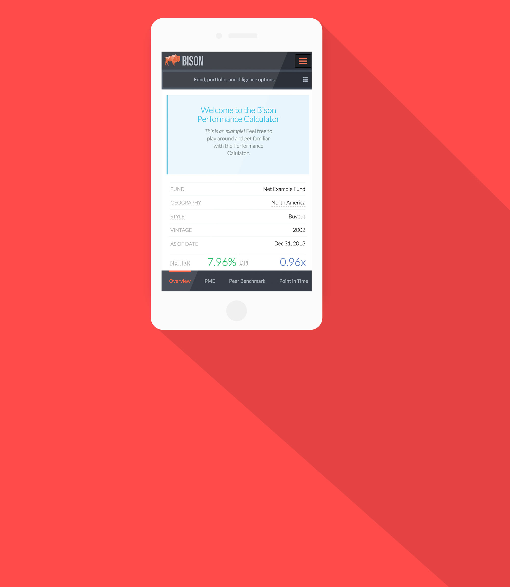

Bison Mobile Conversion

Bison is an advanced web app for analyzing and presenting private equity funds. Today the ubiquity of mobile devices makes it imperative for customers to be able to view this type of analysis and presentations on-the-go as well as on the computer. One of my main tasks was to take the existing website and make it mobile-friendly.
 I began by drawing inspiration from other places on the internet, and constantly going through to check that things were big enough and easily usable on the small screen. This included adding or hiding features that made more sense for mobile as well. For instance, I took the tabs that used to be at the top of the analytics pages on the web version and made them a footer element that was always present for easy access. This solution made more sense for a mobile environment than tabs did. I also employed design techniques like cards and hamburger menus to separate content and make things nice and clean.
I began by drawing inspiration from other places on the internet, and constantly going through to check that things were big enough and easily usable on the small screen. This included adding or hiding features that made more sense for mobile as well. For instance, I took the tabs that used to be at the top of the analytics pages on the web version and made them a footer element that was always present for easy access. This solution made more sense for a mobile environment than tabs did. I also employed design techniques like cards and hamburger menus to separate content and make things nice and clean.